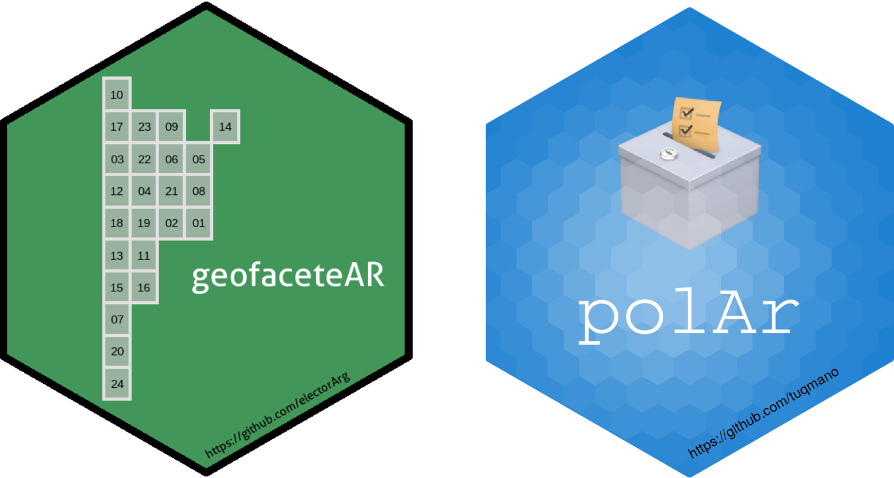
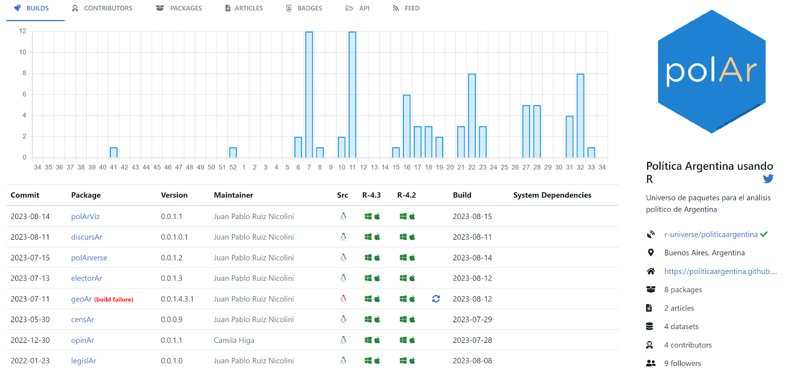

“Sou apenas um cientista político, em pé diante do console do R, pedindo que me ajude a terminar uma tese.”
Corria o ano de 2015, um estudante de mestrado em Ciência Política precisava processar dados para entregar sua tese e decidiu aproveitar a oportunidade para aprender a usar R. Ao longo e tortuoso caminho do requisito acadêmico, foi adicionada uma dificuldade extra: incorporar um software de programação desde o início, com uma curva de aprendizado um tanto íngreme.
Anos depois, reviso scripts do código da tese e sorrio ao ver extensas linhas de código para recodificar variáveis com uma estrutura como esta:
#PARTY LABELS A GOBERNADOR
# 0 VOTOS EN BLANCO
# 1 WAYAR GOBERNADOR (WALTER WAYAR)
# 2 COALICION CIVICA (ARI) (ALBERTO ROLANDO TONDA)
# 3 FRENTE JUSTICIALISTA RENOVADOR DE LA VICOTRIA (JUAN MANUEL URTUBEY)
# 4 FRENTE OLMEDO GOBERNADOR (ALFREDO OLMEDO)
# 5 MORELLO GOBERNADOR / PROYECTO SUR (CARLOS FERNANDO MORELLO)
# 6 PARTIDO OBRERO (CLAUDIO DEL PLA)
# 7 UNION CIVICA RADICAL (DIEGO MARINO)
# 8 MIJD (CARLOS ARIEL FERNANDEZ)
#RECODE TODOS LOS PARTY LABELS SEGUN ADHESIONES A LISTAS CON CANDIDATOS A GOBERNADOR
SALTA$ListaF[ SALTA$Lista == "VOTOS EN BLANCO" & SALTA$Year == 2011] <-9999
SALTA$ListaF[ SALTA$Lista == "AGRUPACION CRECIMIENTO SOLIDARIO" & SALTA$Year == 2011] <-3
SALTA$ListaF[ SALTA$Lista == "AGRUPACION DEMOCRATICA COMUNAL" & SALTA$Year == 2011] <-3
SALTA$ListaF[ SALTA$Lista == "AGRUPACION DEMOCRATICA TARTAGAL (ADETA)" & SALTA$Year == 2011] <-3
SALTA$ListaF[ SALTA$Lista == "AGRUPACION FEDERALISTA POPULAR MOSCONI" & SALTA$Year == 2011] <-1
SALTA$ListaF[ SALTA$Lista == "AGRUPACION FEDERALISTA POPULAR TARTAGAL" & SALTA$Year == 2011] <-3Olhando em retrospectiva, como aos meus scripts, aprender R foi a melhor decisão que tomei em minha carreira profissional.
R desde então é uma ferramenta fundamental no meu dia-a-dia. Seja no âmbito acadêmico e como professor universitário; no meu trabalho como consultor e analista; em minhas tarefas como funcionário público; em meu tempo livre, como um hobby; e em meu trabalho atual, coordenando a equipe de Dados da Fundar, um think tank que estuda e elabora políticas públicas para o desenvolvimento sustentável e inclusivo da Argentina.
De todas as qualidades que o R possui, a comunidade foi o fator determinante na minha jornada com essa linguagem de programação.
Ao concluir o primeiro passo da tese, tomei conhecimento da organização da primeira Conferência Latino-Americana de R para I+D (LatinR), comunidade à qual devo meu segundo (e terceiro… e enésimo) passo em minha relação com o R. Na primeira conferência, apresentei casos de uso para análise política com R, implementando grades da Argentina para usar com ggplot como se fossem mapas com geofacet. Na segunda conferência, apresentamos o Shiny App Inteligência Eleitoral para a análise de resultados eleitorais da Argentina e participei do workshop Desenvolvimento de Pacotes com Hadley Wickham. Esse foi o ponto de partida ideal para começar a ideia de empacotar código por conta própria.

O nascimento do polAr
Com o objetivo de apresentar na terceira conferência do LatinR, desenvolvi o pacote geofacetAR, uma versão polida e com funções para trabalhar com o design de grades como se fossem mapas da Argentina.
A pandemia do Covid-19 começou. E o aprendizado sobre como desenvolver pacotes, em tempos de confinamento e muitas horas na frente do computador, transformou o trabalho de processamento de dados eleitorais, da minha vida como cientista político e consultor, em um novo pacote: polAr; que no dia 16 de maio de 2020 foi enviado ao CRAN.
O universo polAr
Embora originalmente o pacote buscasse facilitar o acesso e ferramentas para a análise de dados eleitorais na Argentina, com o tempo foram integrados outros fluxos de trabalho e fontes de dados (geográficos, discursos presidenciais e votações legislativas), com um aumento de dependências e dificuldade para administrar cada vez mais funções. Esse foi um tema relevante que discutimos no painel Desenvolvimento de Pacotes durante a terceira conferência do LatinR (2020).
polAr havia alcançado 4000 downloads quando recebi um e-mail da equipe do CRAN informando que precisava ajustar uma violação de política para que o pacote não fosse arquivado. Apesar de enviar uma nova versão, o pacote foi arquivado sem uma razão clara.
Se a conversa no LatinR nos fez pensar na separação em múltiplos pacotes como possibilidade, o arquivamento no CRAN nos deu a oportunidade de fazê-lo. A decisão foi gerar fluxos de trabalho independentes; uma estratégia que possibilitou avançar com diferentes ritmos, tomando decisões específicas para cada tema, procurando abordá-los ao mesmo tempo como parte de um conjunto, emulando o paradigma Tidyverse: uma filosofia e gramática de funcionamento similar para a coleção de pacotes. O objetivo foi melhorar o desenvolvimento do que resultou no arquivamento de {polAr}.
Apresentamos “Divida e Vencerá: de {polAr} ao polarverse” na quarta conferência do LatinR, mostrando este novo universo com cinco pacotes:
📦 opinAr: dá acesso a dados de opinião pública e de governo da Argentina a partir do Índice de Confiança no Governo, publicado mensalmente pela Universidade Torcuato Di Tella.
📦 electorAr facilita o acesso a dados eleitorais da Argentina (para diferentes níveis e com diferentes agregações espaciais) e funções para calcular indicadores relevantes.
📦 legislAr: permite baixar informações desagregadas de votações nas câmaras legislativas da Argentina, originadas pelo projeto Década Votada de Andy Tow.
📦 discursAr: projetado para obter dados relacionados a discursos políticos. Inicialmente, fornecendo acesso a discursos presidenciais em assembleias legislativas de inauguração de sessões ordinárias.
📦 geoAr: permite acessar dados e ferramentas para fluxos de trabalho espaciais a partir do R. Uma apresentação sobre o pacote foi aceita para a sexta conferência do LatinR.
Adicionalmente, trabalhamos em uma biblioteca auxiliar chamada polarViz, para facilitar a tarefa de visualização dos outros pacotes, e um metapacote polArverse, que emula o funcionamento do tidyverse, para o carregamento do conjunto de bibliotecas associadas.
🌠 Encontro de universos: o polArverse no R-Universe
Durante este processo, incorporamos o R-Universe no fluxo de trabalho. Ele nos forneceu um espaço autônomo e auto-administrado no qual publicar esses novos pacotes (não mais apenas como repositórios do GitHub) e é de grande ajuda para a verificação em diferentes sistemas operacionais e versões de software. Sem dúvida, o R-Universe é uma ferramenta relevante para a melhor manutenção do polArverse.

Continuamos dando passos importantes para o nosso universo:
Em primeiro lugar, voltamos ao CRAN! Em fevereiro de 2023, enviamos o geoAr, que, como mencionamos, permite acessar e facilitar o processamento de dados com relevância espacial. Uma versão em desenvolvimento (acessível a partir do r-universe) também permite interagir com a API do Serviço de Normalização de Dados Geográficos da Argentina.
Por outro lado, incorporamos uma pendência histórica à caixa de ferramentas polAr para trabalhar com dados censitários: censAr. O pacote, atualmente em desenvolvimento, é baseado no código de censo2017, desenvolvido por Mauricio “Pacha” Vargas e parte da suíte do rOpenSci.
Minha experiência como desenvolvedor de software com R
Comecei a trabalhar com esta linguagem - ou dialeto, como gosta de dizer um colega, a propósito do antecedente do S de Bell na década de 1970 - um pouco por sorte.
Rapidamente o incorporei como ferramenta de trabalho, em múltiplas facetas: como analista, consultor, funcionário público e professor.
A comunidade de R - e, em particular, toda a experiência em torno da LatinR - foi um fator determinante para a minha experiência. Sem dúvida, facilitando muito o processo.
Acredito que é possível pensar em melhorias no processo para fazer do CRAN um espaço ainda melhor para o ecossistema R e tornar a experiência de desenvolvimento FOSS mais agradável e previsível.
O surgimento do projeto R-Universe para melhorar a experiência de publicação e descoberta de pacotes desenvolvidos em R é muito valioso.
O polarverse foi um projeto paralelo no qual trabalhei em meus momentos livres e sem financiamento. Surgiu quase ludicamente, como um experimento para aprender a desenvolver software. Tentamos com sucesso a publicação no CRAN. Ficamos frustrados e irritados. Aprendemos. Adicionamos novas ferramentas.
Continuamos avançando. Aos poucos. Agora, com o apoio e incentivo que representa uma grande equipe da Fundar, em geral, e da área de dados que eu coordeno, em particular. “Devagar, mas seguro”.
(Publicado originalmente em rOpenSci, 05/12/2023)